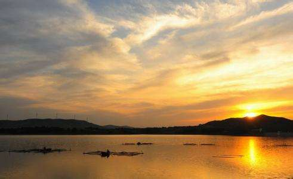

第一次作业
运用html+css制作一个网页
尽量在1920*1080分辨率看吧.
如果显示不正常，
这是效果图。
计算机1502
20154398
贾海峰
我的家乡是辽宁省锦州市黑山县，我来介绍下我的家乡黑山县的风景名胜

龙湾水库：
是锦州地区最大的一座水库，设计库容2400万立方米，水利 库容2300万立方米，年平均水面一万多亩，水域宽阔。从98年年接待游客2万人次猛增到2000年 的十几万人次。
张三丰故里：
据史料载，在西岸修一座土城，金大定九年 在土城设望平县。据说太极拳的创始宗师张三丰就出生在这里。张三丰祠位于黑山县城东部约20公里的 姜屯镇。一代道教大师、武当宗师张三丰，是辽东懿州梁鱼务人，即今辽宁省锦州市黑 山姜屯镇土城子村，是中国全真派道教创始人张三丰的出生地，张三丰祠就座落在风景秀丽的莲花湖畔。
黑山阻击战烈士陵园：
占地3万多平方米，其中黑山阻击战纪念馆为30 0平方米，主要展出的是有关黑山阻击战的图片及实物。辽沈战役的关键在锦州，而黑山阻击战成功地阻截了 廖耀湘兵团，对辽 沈战役的最后胜利起到了决定性的作用，同时辽西围歼战也在黑山打响，为以后的淮海和平津战役奠定了基础。